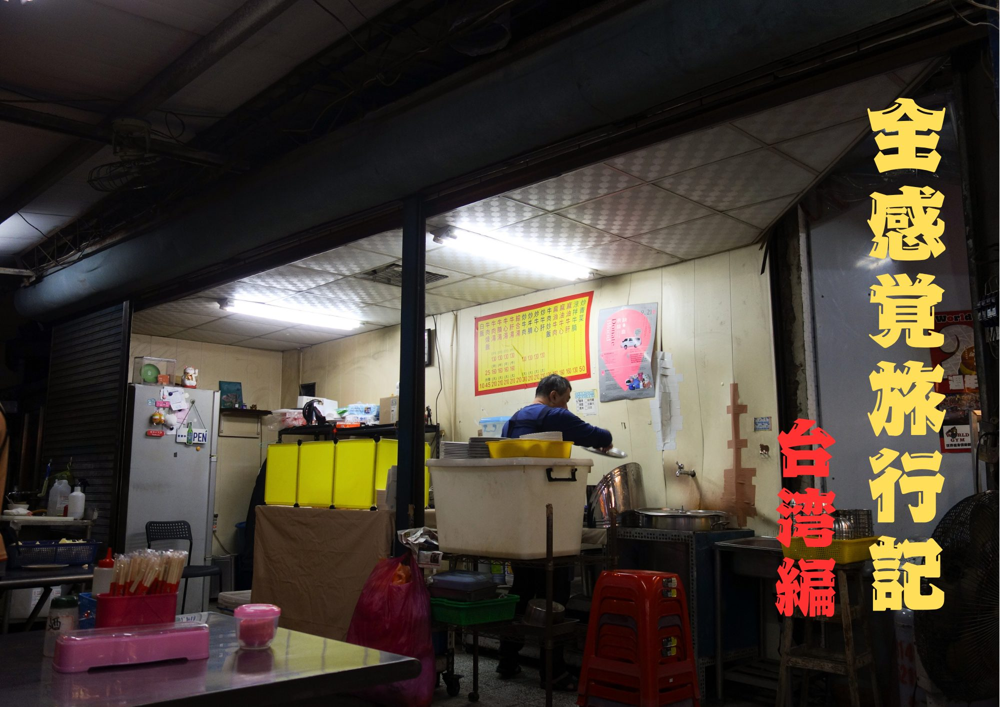
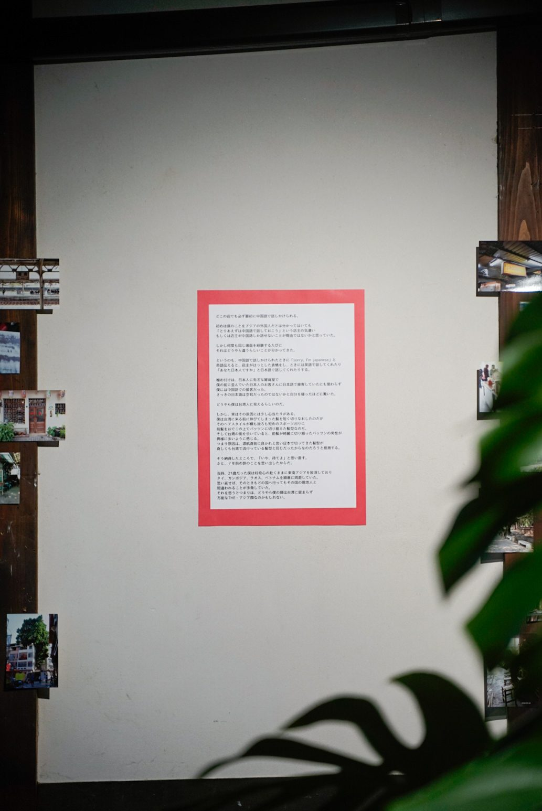
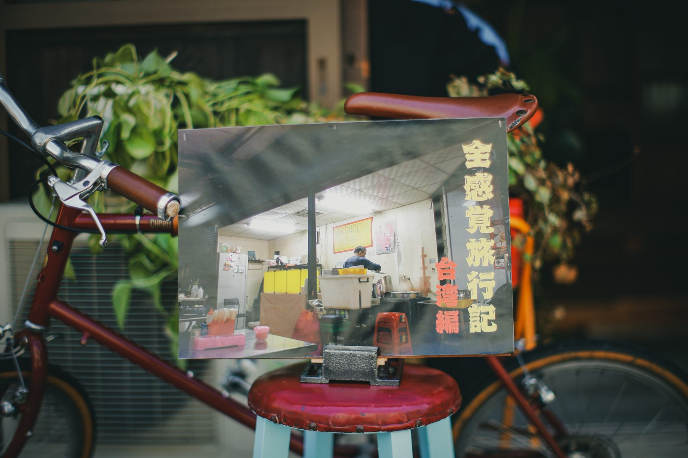
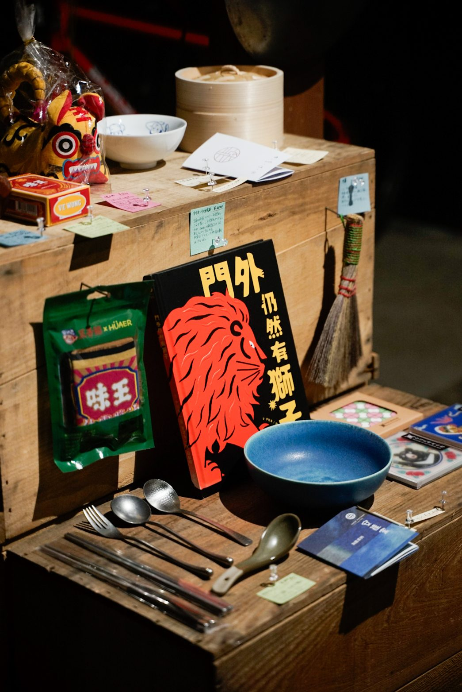
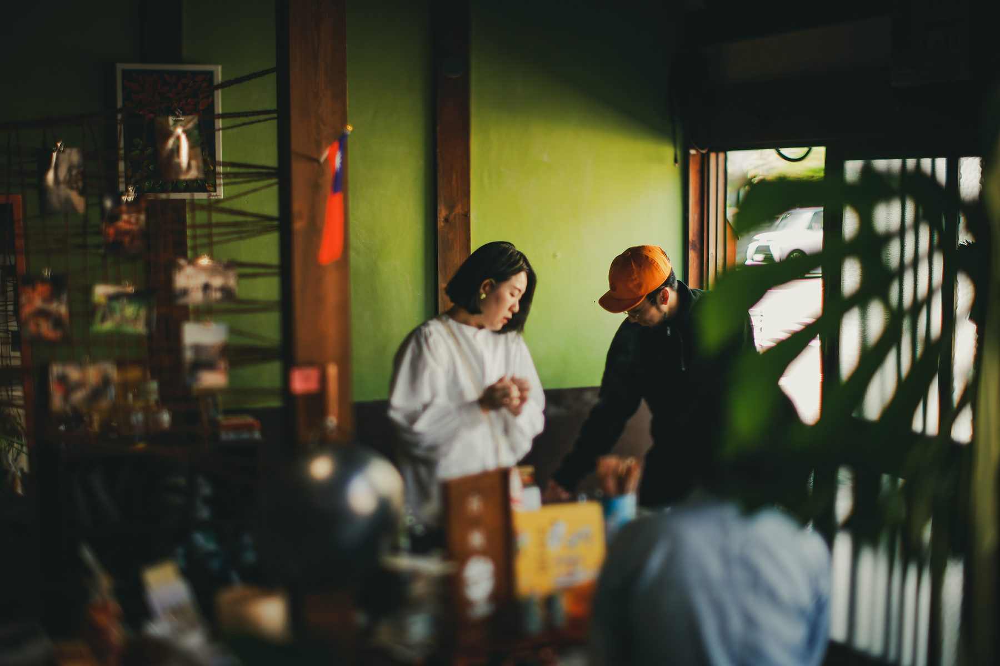
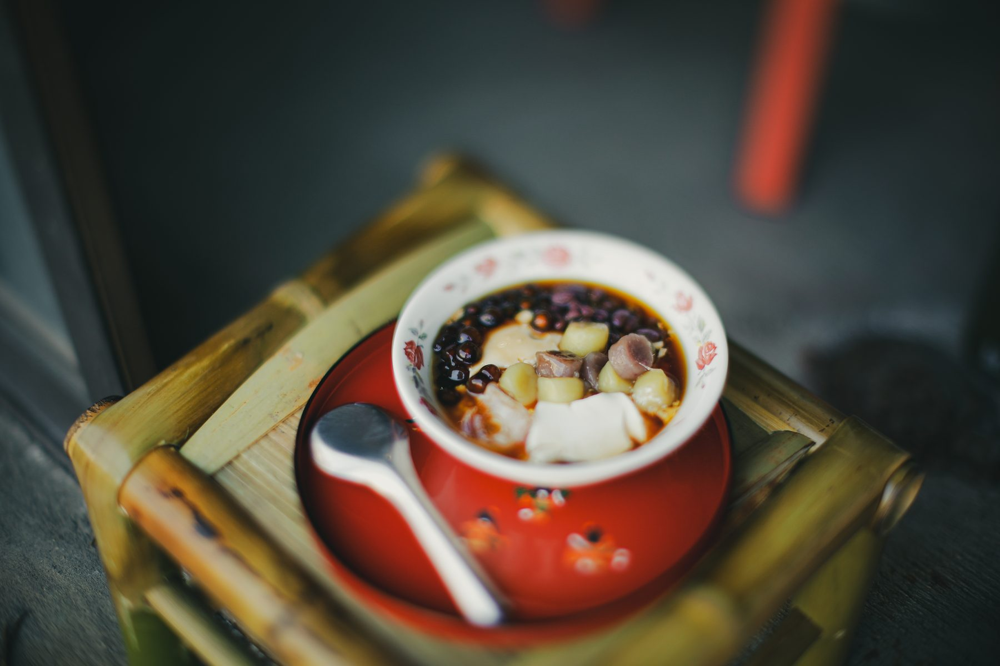

全感覚旅行記 台湾編

2026年4月に終了しました
2026.04.12（日）・04.13（月） ｜ 11:00–17:00 ｜ 入場無料
STATEMENT
言葉を、展示する。
少し旅をした。凝り固まった自分の固定観念を解きほぐすべく、渡航先は言語も文化も違う海外、台湾を選んだ。この旅に目的はなかった。ただただ一人で静かに心を震わせたかった。
地上に降り立ち、久々の異国に気持ちが高揚した。道路に飛び出す看板の群れ。途切れることのないバイクの音。混ざり合う食べ物の匂い。
この九日間の滞在のあいだ、全ての感覚でこの国を感じた。そして感じたことを言葉によって残した。
最適解で書かれるAIの文章でも、ビュー数を稼ぐために書かれたものでもない。一人の人間がただ感じ、記した言葉を、今回は展示という形で皆さんに見ていただきたい。
宮本雅就
ABOUT
読むための、二日間。
台南に着いた日のこと。どの店でも中国語で話しかけられたこと。温泉で会ったおじさんのこと。滞在中に書き留めた七篇を、展示しました。
会場は自宅。土間に椅子を置き、軒先に提灯を吊るして、二日間限定で人が集まる場所をつくりました。




OUTLINE
開催概要
| 催し名 | 全感覚旅行記 台湾編 |
|---|---|
| 会期 | 2026年4月12日（日）・13日（月） 11:00 – 17:00 |
| 入場料 | 無料 |
| 展示内容 | 九日間の台湾滞在中に書いた文章 七篇 滞在中に撮影した写真 旅先で購入した書籍・器・雑貨の展示 |
| 出展 | 台椀（郡上八幡）より、豆花と台湾茶をご提供いただきました。 |
| 主催 | 宮本雅就 |

EXHIBITOR
出展
台椀
TAIWAN ／ 郡上八幡